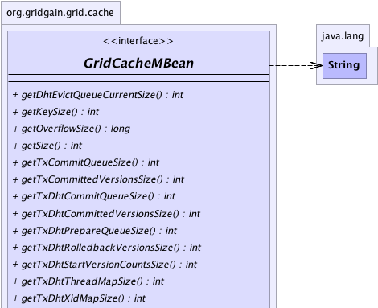
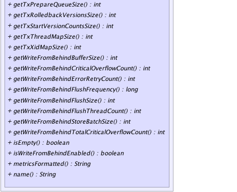

|
|

|

|
|

|

|

|
GridGain™ 3.6.0c
Community Edition |
|||||||||
| PREV CLASS NEXT CLASS | FRAMES NO FRAMES | |||||||||
| SUMMARY: NESTED | FIELD | CONSTR | METHOD | DETAIL: FIELD | CONSTR | METHOD | |||||||||
@GridMBeanDescription(value="MBean that provides access to cache descriptor.") public interface GridCacheMBean
This interface defines JMX view on GridCache.
| Wiki | |
| Forum |
|  |
|  |
| Method Summary | |
|---|---|
int |
getDhtEvictQueueCurrentSize()
Gets current size of evict queue used to batch up evictions. |
int |
getKeySize()
Gets number of keys in the cache, possibly with null values. |
long |
getOverflowSize()
Gets number of entries that was swapped to disk. |
int |
getSize()
Returns number of non- null values in the cache. |
int |
getTxCommitQueueSize()
Gets committed transaction queue size. |
int |
getTxCommittedVersionsSize()
Gets number of cached committed transaction IDs. |
int |
getTxDhtCommitQueueSize()
Gets committed DHT transaction queue size. |
int |
getTxDhtCommittedVersionsSize()
Gets number of cached committed DHT transaction IDs. |
int |
getTxDhtPrepareQueueSize()
Gets prepared DHT transaction queue size. |
int |
getTxDhtRolledbackVersionsSize()
Gets number of cached rolled back DHT transaction IDs. |
int |
getTxDhtStartVersionCountsSize()
Gets DHT start version counts map size. |
int |
getTxDhtThreadMapSize()
Gets transaction DHT per-thread map size. |
int |
getTxDhtXidMapSize()
Gets transaction DHT per-Xid map size. |
int |
getTxPrepareQueueSize()
Gets prepared transaction queue size. |
int |
getTxRolledbackVersionsSize()
Gets number of cached rolled back transaction IDs. |
int |
getTxStartVersionCountsSize()
Gets start version counts map size. |
int |
getTxThreadMapSize()
Gets transaction per-thread map size. |
int |
getTxXidMapSize()
Gets transaction per-Xid map size. |
int |
getWriteFromBehindBufferSize()
Gets count of entries that were processed by the write-from-behind store and have not been flushed to the underlying store yet. |
int |
getWriteFromBehindCriticalOverflowCount()
Gets count of write buffer overflow events in progress at the moment. |
int |
getWriteFromBehindErrorRetryCount()
Gets count of cache entries that are in a store-retry state. |
long |
getWriteFromBehindFlushFrequency()
Gets the cache flush frequency. |
int |
getWriteFromBehindFlushSize()
Gets the maximum size of the write-from-behind buffer. |
int |
getWriteFromBehindFlushThreadCount()
Gets the number of flush threads that will perform store update operations. |
int |
getWriteFromBehindStoreBatchSize()
Gets the maximum count of similar (put or remove) operations that can be grouped to a single batch. |
int |
getWriteFromBehindTotalCriticalOverflowCount()
Gets count of write buffer overflow events since initialization. |
boolean |
isEmpty()
Returns true if this cache is empty. |
boolean |
isWriteFromBehindEnabled()
Returns True if write-from-behind is enabled. |
String |
metricsFormatted()
Gets metrics (statistics) for this cache. |
String |
name()
Gets name of this cache. |
| Method Detail |
|---|
@GridMBeanDescription(value="Cache name.") String name()
@GridMBeanDescription(value="Formatted cache metrics.") String metricsFormatted()
@GridMBeanDescription(value="Number of entries that was swapped to disk.") long getOverflowSize()
@GridMBeanDescription(value="Number of non-null values in the cache.") int getSize()
null values in the cache.
null values in the cache.@GridMBeanDescription(value="Number of keys in the cache (possibly with null values).") int getKeySize()
null values.
@GridMBeanDescription(value="True if cache is empty.") boolean isEmpty()
true if this cache is empty.
true if this cache is empty.@GridMBeanDescription(value="Current size of evict queue.") int getDhtEvictQueueCurrentSize()
@GridMBeanDescription(value="Transaction per-thread map size.") int getTxThreadMapSize()
@GridMBeanDescription(value="Transaction per-Xid map size.") int getTxXidMapSize()
@GridMBeanDescription(value="Transaction committed queue size.") int getTxCommitQueueSize()
@GridMBeanDescription(value="Transaction prepared queue size.") int getTxPrepareQueueSize()
@GridMBeanDescription(value="Transaction start version counts map size.") int getTxStartVersionCountsSize()
@GridMBeanDescription(value="Transaction committed ID map size.") int getTxCommittedVersionsSize()
@GridMBeanDescription(value="Transaction rolled back ID map size.") int getTxRolledbackVersionsSize()
@GridMBeanDescription(value="Transaction DHT per-thread map size.") int getTxDhtThreadMapSize()
@GridMBeanDescription(value="Transaction DHT per-Xid map size.") int getTxDhtXidMapSize()
@GridMBeanDescription(value="Transaction DHT committed queue size.") int getTxDhtCommitQueueSize()
@GridMBeanDescription(value="Transaction DHT prepared queue size.") int getTxDhtPrepareQueueSize()
@GridMBeanDescription(value="Transaction DHT start version counts map size.") int getTxDhtStartVersionCountsSize()
@GridMBeanDescription(value="Transaction DHT committed ID map size.") int getTxDhtCommittedVersionsSize()
@GridMBeanDescription(value="Transaction DHT rolled back ID map size.") int getTxDhtRolledbackVersionsSize()
@GridMBeanDescription(value="True if write-from-behind is enabled for this cache.") boolean isWriteFromBehindEnabled()
True if write-from-behind is enabled.
True if write-from-behind is enabled.@GridMBeanDescription(value="Size of internal buffer that triggers flush procedure.") int getWriteFromBehindFlushSize()
0, then flush is performed only on time-elapsing basis. However,
when this value is 0, the cache critical size is set to
GridCacheConfiguration.DFLT_WRITE_FROM_BEHIND_CRITICAL_SIZE
@GridMBeanDescription(value="Count of flush threads.") int getWriteFromBehindFlushThreadCount()
@GridMBeanDescription(value="Flush frequency interval in milliseconds.") long getWriteFromBehindFlushFrequency()
0, then flush is performed only when buffer size exceeds flush size.
@GridMBeanDescription(value="Maximum size of batch for similar operations.") int getWriteFromBehindStoreBatchSize()
@GridMBeanDescription(value="Count of cache overflow events since write-from-behind cache has started.") int getWriteFromBehindTotalCriticalOverflowCount()
@GridMBeanDescription(value="Count of cache overflow events since write-from-behind cache has started.") int getWriteFromBehindCriticalOverflowCount()
@GridMBeanDescription(value="Count of cache cache entries that are currently in retry state.") int getWriteFromBehindErrorRetryCount()
@GridMBeanDescription(value="Count of cache entries that are waiting to be flushed.") int getWriteFromBehindBufferSize()
|
GridGain™ 3.6.0c
Community Edition |
|||||||||
| PREV CLASS NEXT CLASS | FRAMES NO FRAMES | |||||||||
| SUMMARY: NESTED | FIELD | CONSTR | METHOD | DETAIL: FIELD | CONSTR | METHOD | |||||||||
|
GridGain - Real Time Big Data
|
|
|
|